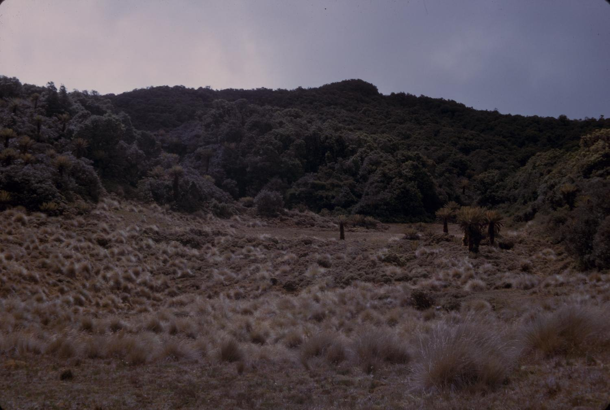

Respect comes first
Ask permission before photographing people or entering private places. Listen to the guidance of hosts and local organisers.
OUR STORY
A fictional Lae-based company with a simple idea: give travellers time to explore, learn, and appreciate their surroundings.

THE COMPANY WE IMAGINE
Morobe Trails PNG brings together six sample tour concepts across nature, culture, and coast. The company is imaginary and was created for the IS229 Web Design project.
The website is designed for PNG residents planning a group outing and international visitors exploring ideas for a future trip. Clear descriptions and prices in kina help visitors compare options before preparing an enquiry.
The packages are examples. No real operator, community, venue, or guide has agreed to deliver them. Arrangements, access, transport, and prices would need to be checked with a real provider before travel.
Find your pathHOW WE WOULD TRAVEL
Ask permission before photographing people or entering private places. Listen to the guidance of hosts and local organisers.
Carry your rubbish out, keep to agreed routes, and leave plants and wildlife undisturbed.
Check access, weather, transport, and suitable activities before travel. An estimate is a starting point, not a confirmed price.
FROM IDEA TO ITINERARY
SEE THE SETTING
Browse our credited collection of archival photographs.